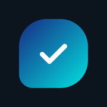

Solu.

Solu. Tareas.
Agregá esta página a la pantalla de inicio para abrir la app con un toque.
Abrir Solu. TareasEn iPhone (Safari)
- Tocá Compartir (el cuadrado con la flecha).
- Elegí Agregar a pantalla de inicio.
- Tocá Agregar.
En Android (Chrome)
- Tocá el menú ⋮ arriba a la derecha.
- Elegí Agregar a pantalla principal o Instalar app.
- Confirmá.
Falta configurar la dirección de la app en esta página. Avisale a quien te compartió el link.